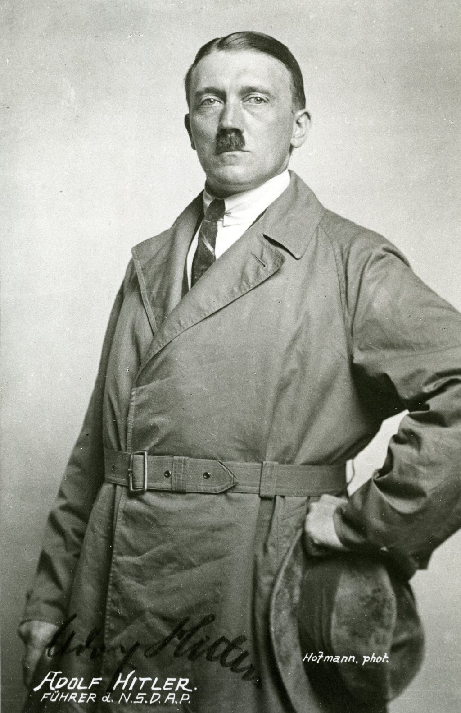

Адолф Хитлер е роден на 20 април 1889г. в градчето Браунау на Ин, което се намира на границата между Австрия и Германия. Още от ранна възраст има голям интерес към изкуството. Мечтата му била да стане художник или архитект. През 1907/08г. на няколко пъти се опитва да влезе във Виенската академия на изкуствата, но е отхвърлен. По това време умира и майката му. Скоро след това започва Първата световна война и той се записва като доброволец. Получава "Железен кръст II степен" и по-късно "Железен кръст I степен" за проявената смелост и бойни заслуги. Раняван е многократно и е награден със "Значка за раняване". Малко преди края на войната е обгазен и ослепява за кратко. В болницата му е съобщено, че Германия е капитулирала и войната е загубена.
След загубата на Германия, Хитлер е съкрушен. Той смята, че армията, „непобедена на бойното поле“, е прободена с нож в гърба от евреите и марксистите в тила. Германия е наказана жестоко от победителите. Именно тогава той осъзнава, че съдбата му е да спаси Германия. През 1919г. се присъединява към малка националистическа партия - Германската Работническа Партия. Скоро той става неин водач и я преименува на Националсоциалистическа Германска Работническа Партия. Така започва неговата възвишена борба - да направи Германия велика отново.